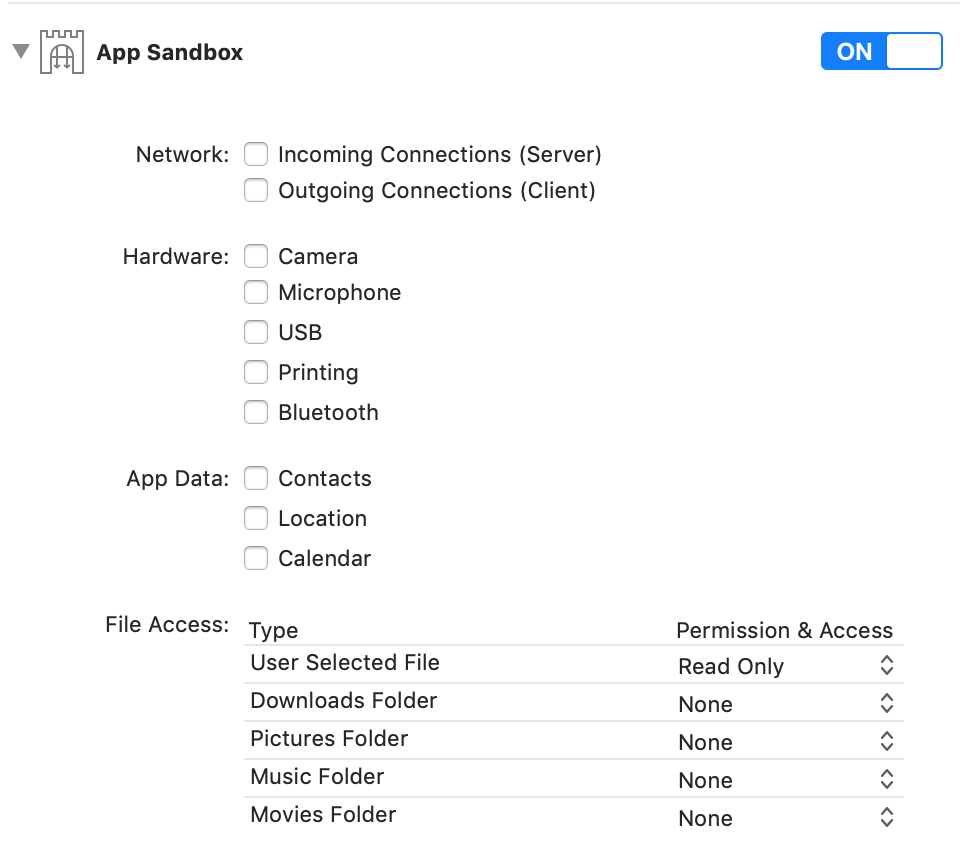
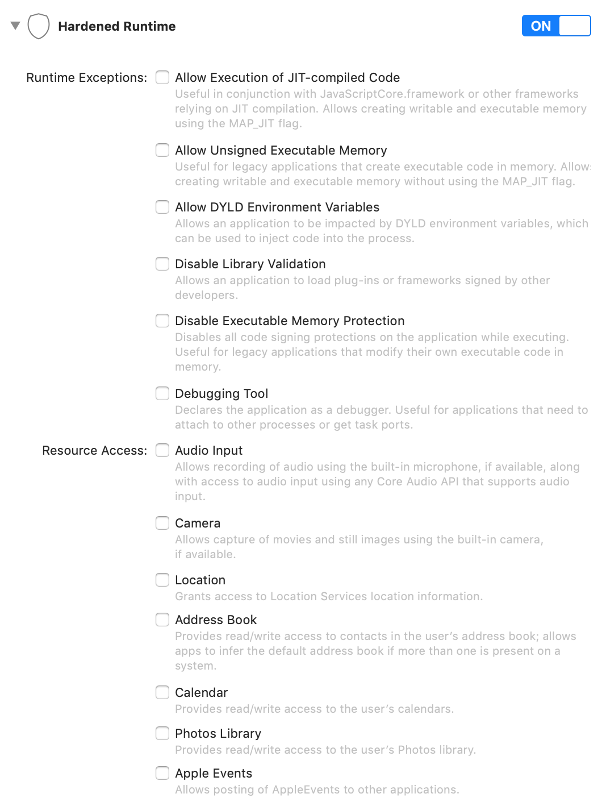

Privacy Policy
Privacy Policy
Network Mom LLC does not want your private information and does not collect your information via the Network Mom ACL Analyzer
Network Mom ACL Analyzer uses Apple's "App Sandbox" feature and does _not_ enable incoming or outgoing network connections. It only allows read-only access to files which the user selects. The application does not even save ACL information between application runs.
Network Mom ACL Analyzer uses Apple's "Hardened Runtime" feature and does _not_ enable any exceptions to the hardened runtime.
These settings prevent the Network Mom ACL Analyzer from harvesting your private information.
Network Mom ACL Analyzer versions distributed from networkmom.net go through Apple's application notarization service with these sandbox and runtime settings.
Network Mom ACL Analyzer versions distributed via Apple's App Store go through Apple App Review with these sandbox and runtime settings.


©2019 Network Mom LLC https://networkmom.net feedback@networkmom.net